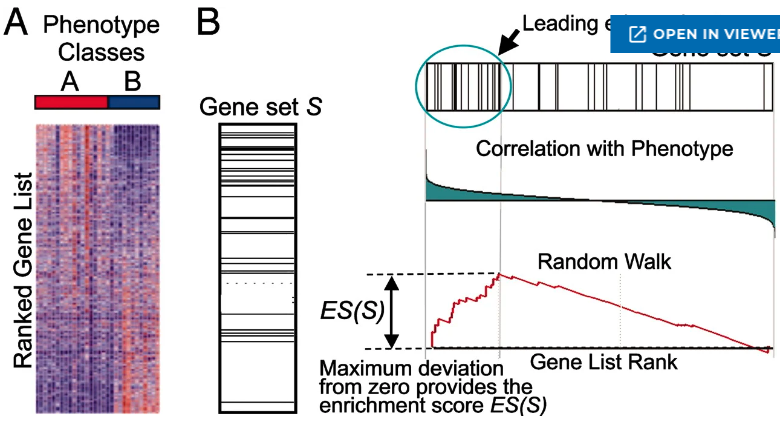
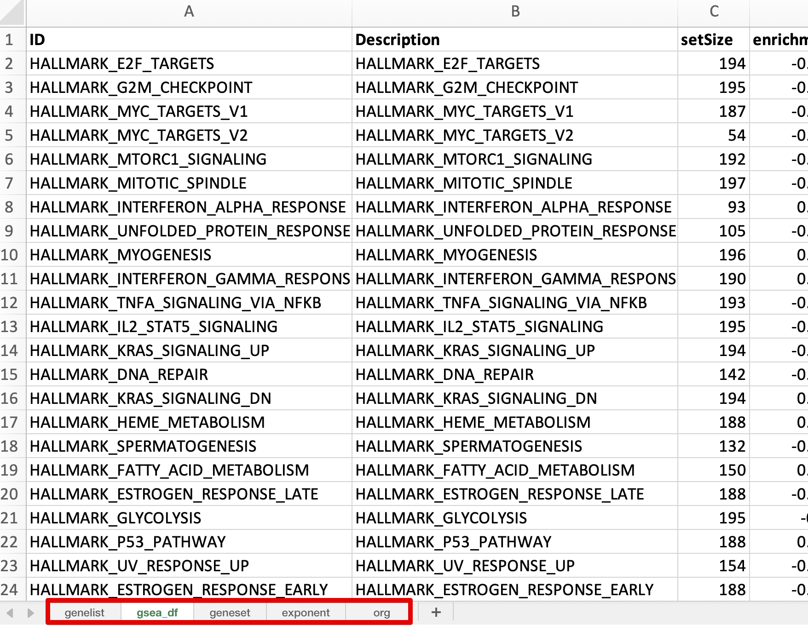

9 FCS-GSEA analysis
9.1 Introduction to FCS methods
The ORA method is easy to use, but it may lose useful information when the differences between genes are small. For example, a gene may play an essential role in a pathway but still be filtered out by the fold-change cutoff if its expression change is small.
Unlike ORA, FCS tools do not use a fixed threshold to select differentially expressed genes. Instead, they assign a differential expression score to each detected gene and then evaluate whether the scores in each gene set are more positive or negative than expected by chance.
According to the article “Ten Years of Pathway Analysis: Current Approaches and Outstanding Challenges”:
FCS approaches include GSEA, GlobalTest, sigPathway, SAFE, GSA, PADOG, PCOT2, FunCluster, SAM-GS, and Category, among others.
Next, we will walk through the popular Gene Set Enrichment Analysis (GSEA) method, which uses permutation-based testing to determine whether a gene set is significantly associated with higher or lower scores.
9.2 Introduction to GSEA
To perform GSEA, you need an ordered, pre-ranked gene list, such as genes ranked by decreasing logFC values.
GSEA generally includes three steps:
Calculate the enrichment score (ES). The ES indicates how strongly the genes in a gene set are overrepresented at either the top or the bottom of the ranked list. GSEA starts at the top of the list and calculates a running sum. The score increases when a gene belongs to the target gene set and decreases when it does not.
Estimate the statistical significance of the ES. This is done with a permutation test, which generates a null distribution for the ES.
Adjust for multiple testing when many gene sets are analyzed at the same time. The enrichment score of each gene set is normalized, and a false discovery rate is calculated.

Figure 9.1: GSEA overview
For a more detailed explanation of the GSEA procedure, please visit https://www.pathwaycommons.org/guide/primers/data_analysis/gsea or https://github.com/crazyhottommy/RNA-seq-analysis/blob/master/GSEA_explained.md.
9.3 Basic usage
The main arguments are:
-
genelist: a pre-ranked gene list in decreasing order (a named numeric vector), such as a list ranked by logFC or correlation. Entrez IDs, Ensembl IDs, and gene symbols are accepted. -
geneset: a two-column data frame containing term IDs and gene IDs. We recommend using geneset to prepare gene sets. -
p_cutoff: a numeric cutoff for both the p-value and adjusted p-value. The default is 0.05. -
q_cutoff: a numeric cutoff for the q-value. The default is 0.05.
9.3.1 Step 1: Prepare a pre-ranked gene list
## 948 1638 158471 10610 6947 100133941
## 5.780170 5.633027 4.683610 3.875120 3.357670 3.3225339.3.2 Step 2: Prepare a gene set
gs <- geneset::getGO(org = "human",ont = "mf")9.3.3 Step 3: Run GSEA
gse <- genGSEA(genelist = geneList, geneset = gs)Now, let’s take a look at the result.
The returned object is a list that mainly contains the analysis results (gsea_df), the input gene list (genelist), and the input gene set (geneset).
class(gse)## [1] "list"
names(gse)## [1] "gsea_df" "genelist" "geneset" "exponent" "org"
head(gse$genelist)## ID logfc
## CD36 CD36 5.780170
## DCT DCT 5.633027
## PRUNE2 PRUNE2 4.683610
## ST6GALNAC2 ST6GALNAC2 3.875120
## TCN1 TCN1 3.357670
## CD24 CD24 3.322533
head(gse$geneset)## id gene
## 1 GO:0000009 PIGV
## 2 GO:0000009 ALG12
## 3 GO:0000009 ALG2
## 4 GO:0000014 ERCC1
## 5 GO:0000014 ERCC4
## 6 GO:0000014 MRE11
head(gse$gsea_df, 5)## Hs_MF_ID Description setSize
## GO:0003678 GO:0003678 DNA helicase activity 57
## GO:0017116 GO:0017116 single-stranded DNA helicase activity 24
## GO:0008094 GO:0008094 ATP-dependent activity, acting on DNA 118
## GO:0017056 GO:0017056 structural constituent of nuclear pore 21
## GO:0003697 GO:0003697 single-stranded DNA binding 111
## enrichmentScore NES pvalue p.adjust qvalue
## GO:0003678 -0.7407188 -2.517871 1.938079e-11 3.422094e-09 2.141764e-09
## GO:0017116 -0.8723960 -2.505996 3.696204e-10 4.153189e-08 2.599329e-08
## GO:0008094 -0.6440061 -2.481783 7.319114e-14 2.261606e-11 1.415457e-11
## GO:0017056 -0.8612352 -2.417513 1.422998e-08 1.465688e-06 9.173208e-07
## GO:0003697 -0.6286387 -2.370217 6.659685e-12 1.371895e-09 8.586191e-10
## rank leading_edge
## GO:0003678 1163 tags=46%, list=6%, signal=43%
## GO:0017116 1123 tags=71%, list=6%, signal=67%
## GO:0008094 1172 tags=32%, list=6%, signal=30%
## GO:0017056 1567 tags=67%, list=8%, signal=61%
## GO:0003697 2061 tags=35%, list=11%, signal=31%
## core_enriched_geneID
## GO:0003678 RUVBL2/DHX9/CHTF18/FANCM/G3BP1/TWNK/RUVBL1/RFC5/RFC2/DNA2/RFC4/ZGRF1/MCM3/MCM8/BRIP1/MCM2/MCM7/RFC3/POLQ/DSCC1/MCM5/MCM4/MCM6/ERCC6L/BLM/RAD51
## GO:0017116 DHX9/CHTF18/RFC5/RFC2/DNA2/RFC4/MCM3/MCM8/MCM2/MCM7/RFC3/POLQ/DSCC1/MCM5/MCM4/MCM6/RAD51
## GO:0008094 CHD1/RUVBL2/DHX9/CHTF18/RAD51C/FANCM/XRCC3/G3BP1/TWNK/RUVBL1/MSH6/DMC1/TOP2A/RFC5/MSH2/TTF2/RFC2/DNA2/RFC4/ZGRF1/MCM3/MCM8/BRIP1/MCM2/MCM7/RFC3/POLQ/DSCC1/MCM5/MCM4/ATAD5/MCM6/HELLS/RAD54L/ERCC6L/BLM/RAD51/XRCC2
## GO:0017056 NUP98/NUP54/NUP93/NUP153/NUP88/NUP160/NUP188/NUP155/NUP85/NDC1/NUP58/NUP35/NUP107/NUP205
## GO:0003697 HNRNPU/RPA1/POLR2H/TDP1/NOL12/MLH1/HMGB1/RAD23A/FAM111A/HSPD1/DHX9/TOP1/TOP3A/SMC4/TWNK/SMC2/HMGB2/RNF138/POLA1/DMC1/MSH2/RPA2/RAD18/MCM3/MCM8/MCM2/MCM7/NEIL3/MCM5/MCM4/MCM6/MMS22L/RAD54L/BRCA2/RAD51AP1/BLM/RAD51/CDC45/MCM10
## log2err core_enriched_count
## GO:0003678 0.8634154 26
## GO:0017116 0.8140358 17
## GO:0008094 0.9545416 38
## GO:0017056 0.7477397 14
## GO:0003697 0.8870750 39
## all_enriched_geneID
## GO:0003678 MCM3/RECQL5/DHX30/ERCC2/MCM5/TWNK/WRNIP1/RUVBL1/BLM/MCM7/HFM1/MCM9/RECQL4/MCM2/ASCC3/RECQL/CHTF18/FBH1/BRIP1/WRN/MCMDC2/MCM6/MCM8/IGHMBP2/RUVBL2/ATRX/DDX3X/DHX9/DNA2/ERCC3/XRCC6/MCM4/MRE11/RAD51/UPF1/RFC2/RFC3/RFC4/RFC5/SUPV3L1/XRCC5/CHD1L/RAD50/G3BP1/POLQ/SETX/ERCC6L/CHTF8/ZGRF1/CHD8/FANCM/DSCC1/PIF1/NAV2/HELB/HELQ/DHX36
## GO:0017116 MCM3/MCM5/WRNIP1/MCM7/MCM9/MCM2/CHTF18/MCMDC2/MCM6/MCM8/DHX9/DNA2/MCM4/RAD51/RFC2/RFC3/RFC4/RFC5/POLQ/CHTF8/DSCC1/PIF1/HELB/HELQ
## GO:0008094 MCM3/RECQL5/DHX30/ERCC2/RAD51B/MCM5/CHD2/SMARCA4/TWNK/CHD4/WRNIP1/RUVBL1/BLM/MCM7/CHD3/HFM1/MCM9/RECQL4/MCM2/ASCC3/RECQL/CHTF18/FBH1/TTF2/BRIP1/CHD7/HLTF/SMARCA2/CHD6/RFC3/WRN/CHD8/MCMDC2/RFC5/SMARCA5/RFC2/CHD5/CHD1/RAD51/RFC4/SMARCA1/MCM6/MCM8/IGHMBP2/SMARCAD1/RAD17/RUVBL2/ATRX/CDK7/CHRNA4/DAXX/DDX1/DDX3X/DHX9/DNA2/ERCC3/BPTF/XRCC6/MSH6/HELLS/MCM4/MLH1/MRE11/MSH2/MSH3/MYD88/PMS1/PMS2P1/PMS2P3/PMS2/RAD51C/RBBP4/UPF1/RFC1/SMARCB1/SMARCC1/SMARCC2/SMARCD1/SMARCD3/SMARCE1/SUPV3L1/TOP2A/TOP2B/TP53/XRCC2/XRCC3/XRCC5/ARID1A/RAD54L/BTAF1/CHD1L/RAD50/G3BP1/POLQ/DMC1/MORC2/WAPL/SETX/RAD54L2/SPO11/MLH3/CECR2/SMARCAL1/RSF1/INO80/ERCC6L/CHTF8/ZGRF1/FANCM/DSCC1/ATAD5/PIF1/ZRANB3/NAV2/HELB/HELQ/DHX36/ARID2
## GO:0017056 NUP58/NUP155/NUP107/POM121L2/NUP160/NUP85/NPAP1/TPR/NUP188/NUP214/NUP133/NUP153/NUP54/NUP35/NUP93/NUP88/NUP98/NUTF2/NUP205/NUP62CL/NDC1
## GO:0003697 APTX/ERCC1/MCM3/BIVM/SSBP1/MEIOB/RAD51B/SETMAR/MCM5/ERCC4/RAD51AP1/TDP1/TWNK/SMC6/CDC45/MCM7/POLA1/MCM9/MCM2/TERF1/RPA2/SMC5/RNF138/RPA1/RPA3/MCMDC2/RAD50/MCM10/XPC/NUCKS1/PCBP1/POT1/RAD51/RPA4/MCM6/MCM8/CTC1/BLM/BRCA2/CRY2/DHX9/HMGB1/HMGB2/HNRNPA1/HNRNPA2B1/HNRNPU/HSPD1/IGHMBP2/JCHAIN/MAPT/MCM4/MLH1/MSH2/MSH3/YBX1/PMS2/POLR2G/POLR2H/POU4F1/PURA/PURB/RAD23A/RAD23B/RBMS1/RECQL/SMARCA1/HLTF/TERF2/TOP1/TOP3A/TP53/TSN/RAD54L/FUBP1/FUBP3/LONP1/RECQL4/HNRNPDL/SMC4/LRPPRC/SMC2/POLR3C/SUB1/DMC1/RTF1/SSBP2/SSBP3/SAMHD1/SMARCAL1/TDP2/WBP11/PCBP3/TERF2IP/RADX/NEIL3/RAD18/HMCES/REXO4/WDR48/FAM111A/NABP1/NABP2/NOL12/STN1/SPRTN/ZRANB3/FBH1/SWSAP1/SSBP4/DHX36/MMS22L
## all_enriched_count
## GO:0003678 57
## GO:0017116 24
## GO:0008094 118
## GO:0017056 21
## GO:0003697 111About the
gsea_dfresult
Description: the name of the gene set.setSize: the number of genes in the gene set that have gene-level statistic values in the input list. For example, a pathway gene set may contain 58 genes, such asHALLMARK_MYC_TARGETS_V2, but only 54 of them may be present in the input gene list. In this case, the result will showsetSize = 54.enrichmentScore: also called ES, as in the Broad GSEA implementation. It reflects the degree to which a gene set is overrepresented at the top or bottom of a ranked gene list.NES: the normalized enrichment score and the primary statistic used to examine gene set enrichment results. By normalizing the enrichment score, GSEA accounts for differences in gene set size and correlations between gene sets and the expression dataset. Therefore, NES values can be used to compare results across gene sets. A positive NES indicates that the genes in set S are mainly found near the top of the ranked list, which usually corresponds to genes withlogFC > 0or upregulated genes.rank: the position in the ranked list where the maximum enrichment score occurs. If a gene set reaches its maximum enrichment score near the top or bottom of the ranked list, the rank at the maximum will be either very small or very large.-
leading_edge: contains three statistics:-
tags: the percentage of gene hits that appear before the peak for a positive ES or after the peak for a negative ES. It indicates the proportion of genes that contribute to the enrichment score. -
list: the percentage of genes in the ranked list that appear before the peak for a positive ES or after the peak for a negative ES. It gives an idea of where the enrichment score is reached in the list. -
signal: the strength of the enrichment signal. If the entire gene set appears within the first N positions of the list, the signal is strongest and may reach 100%. If the genes are spread throughout the list, the signal decreases toward 0%.
-
core_enriched_geneIDandcore_enriched_count: the leading-edge genes (the subset of the gene set that contributes most to the enrichment score, i.e. genes before the peak for a positive ES or after the peak for a negative ES) and their number.all_enriched_geneIDandall_enriched_count: all genes of the gene set that are present in the ranked list, and their number.geneID_symbol: gene IDs are kept in the same ID type as the gene set (e.g. Entrez for KEGG and MSigDB, symbol for GO). For Entrez-based gene sets, this extra column gives the corresponding gene symbols.log2err: the expected error of the log2(p-value) estimate, reported by the underlyingfgseaalgorithm.
9.4 Advanced usage
9.4.1 Additional arguments
padj_method, min_gset_size and max_gset_size work the same as in the ORA section. Two more things are specific to GSEA:
-
set_seed: GSEA estimates p-values by permutation, so results can differ slightly between runs. Setset_seed = TRUEto get the same result every time for the same input. - Duplicated genes: if several input IDs are mapped to the same gene after ID conversion (e.g. an alias and the official symbol of the same gene), only the first (highest ranked) one is kept, and a message tells you how many were removed.
9.4.2 Simplify GO GSEA results
The GO result of genGSEA uses the same ID column name as genORA (e.g. Hs_MF_ID), so it can be passed to simGO() directly (see the ORA section for details):
## [1] 88 15## [1] 34 159.5 Export GSEA results
genekitr provides an easy way to export analysis results for further editing and sharing.
Multiple data frames are saved as separate sheets in a single Excel file, and the column names are automatically formatted in bold.
genekitr::expoSheet(data_list = gse,
data_name = names(gse),
filename = "gsea_result.xlsx",
dir = "./")
Figure 9.2: Export results